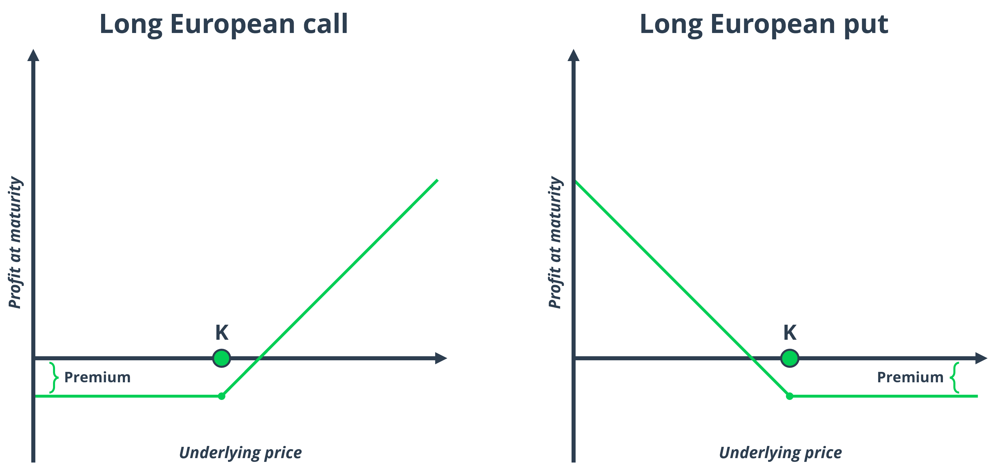

Python | European options
Challenge introduction
Pricing European options holds significant relevance in the field of finance, and acquiring the capability to perform these calculations through both analytical formulas and Monte Carlo simulations in Python is a valuable skill set for those involved in quantitative finance and algorithmic trading. These methods enable finance professionals and programmers to not only gain a deeper understanding of option pricing models but also to develop practical and efficient tools.
By implementing these pricing models in Python, one can automate and streamline the process, making it easier to analyze various option strategies, perform risk assessments, and adapt to dynamic market conditions. Moreover, this programming proficiency can be leveraged in developing custom financial software or algorithmic trading systems, ultimately enhancing one's ability to make data-driven investment decisions and manage portfolios effectively in today's fast-paced financial landscape.
This challenge comes from my own experience in the field of quantitative finance. I recommend attempting to solve the challenge independently before reviewing the provided solution.
Problem statement
European options are financial derivatives commonly traded in the stock and options markets. A European call option provides the holder the right, but not the obligation, to buy an underlying asset, typically a stock, at a predetermined strike price on a specified expiration date. On the other hand, a European put option gives the holder the right, but not the obligation, to sell the underlying asset at the agreed-upon strike price upon the expiration date. These options differ from American options in that they can only be exercised at expiration, while American options can be exercised at any time before or on the expiration date.
Upon reaching the expiration date, the profit outcomes for both call and put option buyers can be depicted as illustrated in the following charts. When the market price of the underlying asset falls below (rises above) the predetermined strike price, the call (put) option buyer incurs a limited loss equivalent to the premium paid to acquire the option. As the underlying asset's price surpasses the strike price, the option's payoff becomes positive, and the breakeven point is achieved when the payoff equals the initial premium investment.
Key pricing parameters for European options include the strike price (the price at which the asset will be bought or sold), the current market price of the underlying asset, the time to expiration, the risk-free interest rate, and volatility. These parameters are crucial in determining the option's market price, and mathematical models like the Black-Scholes-Merton model are often used to calculate the fair value of European options.
You have been provided with the task of obtaining the prices for a European call and a European put under the Black-Scholes-Merton model by using two different approaches: analytical closed form and Monte Carlo simulation.
Solution
The Black-Scholes-Merton model, pioneered by economists Fischer Black, Myron Scholes, and Robert Merton in the early 1970s, laid the groundwork for the development of rigorous mathematical models in the realm of derivative pricing.
The model relies on a set of fundamental assumptions. Firstly, it assumes the efficiency of financial markets, characterized by the absence of arbitrage opportunities. Second, it postulates that the underlying asset of the option follows a geometric Brownian motion, capturing the continuous and stochastic nature of asset price fluctuations. The model further assumes the absence of transaction costs and constant interest rates.
A notable feature of the Black-Scholes-Merton model is that it intriguingly does not consider the expected returns of the underlying asset, as the valuation approach seeks to create a hedged portfolio that remains immune to the stochastic evolution of the asset rather (while considering its volatility). By ensuring that the option portfolio is effectively hedged, the invested amount is expected to increase solely at the risk-free interest rate, which, therefore, serves as the relevant rate of return under the risk-neutral framework employed by the model.
Ultimately, Black, Scholes, and Merton derived a system of differential equations governing the dynamics of option values, leading to the following analytical expressions for pricing European call (\(\small C\)) and put (\(\small P\)) options.
\(\small \displaystyle C = S e^{-q t}N(d_1) - K e^{-r t}N(d_2)\) \(\small \displaystyle P = K e^{-r t}N(-d_2) - S e^{-q t}N(-d_1)\)
With:
\(\small \displaystyle d_1 = \frac{\ln{\frac{S}{K}} + (r - q + \frac{\sigma^2}{2}) t}{\sigma \sqrt{t}}\) \(\small \displaystyle d_2 = \frac{\ln{\frac{S}{K}} + (r - q - \frac{\sigma^2}{2}) t}{\sigma \sqrt{t}} = d_1 - \sigma \sqrt{t}\) \(\small \displaystyle N(x) = \frac{1}{\sqrt{2\pi}} \int_{-\infty}^{x} e^{-z^2/2}dz\) (the CDF of the Gaussian distribution)
Where:
- \(\small S\) is the current price of the underlying.
- \(\small K\) is the strike price.
- \(\small r\) is the risk-free rate of return.
- \(\small t\) is the time to maturity for the option.
- \(\small \sigma\) is the volatility of the underlying.
- \(\small q\) is continuous rate of dividends of the underlying.
One posible implementation of the analytical formula in Python is as follows:
import numpy as np
from scipy.stats import norm
def calc_bs_formula_european_option_price(option_type: str, s_0: float, k: float, r: float,
t: float, sigma: float, q: float = 0) -> float:
d1 = (np.log(s_0 / k) + (r - q + (sigma ** 2) / 2) * t) / (sigma * np.sqrt(t))
d2 = d1 - sigma * np.sqrt(t)
if option_type == 'call':
price = s_0 * np.exp(-q * t) * norm.cdf(d1) - k * np.exp(-r * t) * norm.cdf(d2)
elif option_type == 'put':
price = k * np.exp(-r * t) * norm.cdf(-d2) - s_0 * np.exp(-q * t) * norm.cdf(-d1)
else:
raise ValueError(f'Option type {option_type} not recognized, please use call or put')
return price
The alternative Monte Carlo simulation approach involves simulating the geometric Brownian motion that governs the behavior of the underlying asset and then discounting the expected option payoff to its present value. The dynamics of the underlying asset price are modeled using the following formula:
\(\displaystyle S_t = S e^{(\mu - q - \frac{\sigma^2}{2})t + \sigma W_t}\)
Here, \(\small W_t\) represents a Wiener process or standard Brownian motion, with the rest of the elements following the notation previously described.
After simulating a sufficient number of asset price paths up to the option's expiration at time \(\small T\), we can extract the vector of simulated underlying prices at expiration (\(\small S_T\)). Therefore, the option's value at expiration is determined by the average of \(\small max(S_T - K, 0)\) for call options and \(\small max(K - S_T, 0)\) for put options. To arrive at the present-day option price, the final step involves discounting to present value using the factor \(\small e^{-rt}\).
import numpy as np
from typing import Tuple
class WienerProcess:
"""
This class implements an arbitrary number of independent Wiener processes.
The output is a 3D numpy ndarray with the following axes:
· n_steps: number of steps for each brownian motion.
· n_processes: number of independent processes to simulate.
· n_assets: number of independent simulations with n_steps and n_processes.
"""
def __init__(self, periods: int = 252) -> None:
self.periods = periods
def calculate(self, n_steps: int, n_processes: int,
n_assets: int = 1) -> Tuple[np.ndarray, np.ndarray]:
shape = (n_steps, n_processes, n_assets)
u_t = np.random.normal(loc=0, scale=1 / np.sqrt(self.periods), size=shape)
w_t = np.concatenate((np.zeros(shape=(1, n_processes, n_assets)),
u_t.cumsum(axis=0)), axis=0)
return u_t, w_t
class GeometricBrownianMotion:
"""
This class implements an arbitrary number of correlated geometric brownian motions.
The output is a 2D numpy ndarray with the following axes:
· n_steps: number of steps for each brownian motion.
· n_processes: number of independent processes to simulate.
"""
def __init__(self, mu: float, sigma: float, s_0: float, q: float,
periods: int = 252) -> None:
self.periods = periods
self.mu, self.sigma = mu, sigma
self.s_0 = s_0
self.q = q
def calculate(self, n_steps: int, n_processes: int) -> np.ndarray:
_, w_t = WienerProcess(periods=self.periods).calculate(*(n_steps, n_processes))
t = np.arange(0, n_steps + 1) / self.periods
drift = (self.mu - self.q - .5 * self.sigma ** 2) * t
s_t = self.s_0 * np.exp(drift[:, np.newaxis] + (self.sigma * w_t[:, :, 0]))
return s_t
def calc_bs_simulation_european_option_price(option_type: str, s_0: float, k: float,
r: float, t: float, sigma: float,
q: float = 0, periods: int = 252,
n_processes: int = 100_000) -> float:
s_t = GeometricBrownianMotion(r, sigma, s_0, q, periods).calculate(int(periods * t),
n_processes)
if option_type == 'call':
price = np.exp(-r * t) * np.maximum(s_t[-1, :] - k, 0).mean()
elif option_type == 'put':
price = np.exp(-r * t) * np.maximum(k - s_t[-1, :], 0).mean()
else:
raise ValueError(f'Option type {option_type} not recognized, please use call or put')
return price
However, if our primary concern is solely the resulting option price without the need to consider other critical factors like option sensitivities (the Greeks), we can develop a significantly faster and more robust simulation method based on the properties of the geometric Brownian motion at the option's maturity.
Upon closer examination of our geometric Brownian motion formula, we note a drift term that is time-dependent and a stochastic term driven by a standard Brownian motion. For the drift term, we can conveniently replace the variables with their values at maturity, substituting \(\small T\) instead of each intermediate \(\small t\), to determine the value at expiration. Regarding the Wiener process, we can determine its mean (zero) and variance (\(\small T\)) after \(\small T\) time steps, which is sufficient to characterize its distribution of values. This simplification allows us to bypass intermediate steps and model the expected distribution of \(\small S_T\), following the previously described approach.
This method converges much more rapidly as it requires the generation of significantly fewer random numbers. Additionally, it is more precise, as it mitigates rounding errors and phenomena associated with the pseudo-random nature of numbers generated by computer-based Monte Carlo simulations.
import numpy as np
from scipy.stats import norm
def calc_bs_distribution_european_option_price(option_type: str, s_0: float,
k: float, r: float, t: float,
sigma: float, q: float = 0,
n_processes: int = 500_000) -> float:
prob_space = np.linspace(.000001, .999999, n_processes)
b_t = norm(loc=0, scale=np.sqrt(t))
s_t = s_0 * np.exp((r - q - .5 * sigma ** 2) * t + sigma * b_t.ppf(prob_space))
if option_type == 'call':
price = np.exp(-r * t) * np.maximum(s_t - k, 0).mean()
elif option_type == 'put':
price = np.exp(-r * t) * np.maximum(k - s_t, 0).mean()
else:
raise ValueError(f'Option type {option_type} not recognized, please use call or put')
return price